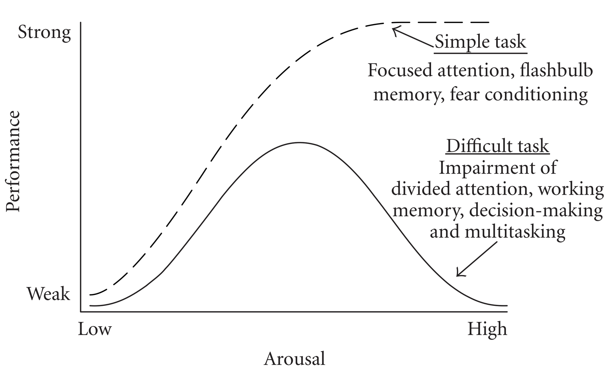

### Brainhacks “Agile is not a methodology, it’s a mindset. It’s a way of thinking that values individuals and interactions over processes and tools.” – Larman, Craig “Agile is not about doing more work faster. It’s about creating an environment where teams can work together more effectively.” – Kniberg, Henrik // Name: Jukka Nikki, Identity: Programmer, Since: 6502 // Certified Scrum Master, Certified Scrum Product Owner
#### [Agile Principles: Motivated team](https://agilemanifesto.org/principles.html) "Build projects around motivated individuals. Give them the environment and support they need, and trust them to get the job done."
#### [McGregor: theory x and y](https://en.wikipedia.org/wiki/Theory_X_and_Theory_Y) <img alt="theory x and y" src="images/theory_x_y.png" width="70%"> X: heightened supervision, external rewards, penalties. Y: motivating role of job satisfaction, encourages workers to approach tasks without direct supervision.
#### [theory x and agile](https://medium.com/@giullianagoianaviana/theories-x-and-y-and-agile-failure-in-organizations-2a29c7b32eda) Agile methodologies are built on the pillars of self-organization, self-reflection, and self-adjustment. They are based on creating an environment in which people can agree and commit to the organizational goals, and they are given trust to make their own decisions about how they organize the work. These frameworks cannot fit in an organizational environment in which Theory X beliefs are predominant.
#### [Hackman: WHY TEAMS DON’T WORK 1/2](https://hbr.org/2009/05/why-teams-dont-work) even the best leader on the planet can’t make a team do well. All anyone can do is increase the likelihood that a team will be great by putting into place five conditions. 1. teams must be real. 2. teams need a compelling direction. 3. teams need enabling structures. 4. teams need a supportive organization. 5. teams need expert coaching.
#### [Hackman: WHY TEAMS DON’T WORK 2/2](https://hbr.org/2009/05/why-teams-dont-work) There are many cases where collaboration, particularly in truly creative endeavors, is a hindrance rather than a help. The challenge for a leader is to find a balance between individual autonomy and collective action. Either extreme is bad, though we are generally more aware of the downside of individualism in organizations.
#### [katzenback & smith: team effectiviness 1/3](https://teamleadsky.com/katzenbach-smith-model) ‘In pseudo-teams, the sum of the whole is less than the potential of the individual parts’ - Katzenbach & Smith
#### [katzenback & smith: team effectiviness 2/3](https://teamleadsky.com/katzenbach-smith-model) The ***working group*** provides a comfortable and low-risk environment where there is no need for an individual to take responsibility beyond their assigned accountability for delivery of the assigned task. The ***pseudo team*** is the weakest of all the groups in terms of performance, often because the energy used in interacting with each other reduces the individual performance of group members without providing the desired joint team benefit.
#### [katzenback & smith: team effectiviness 3/3](https://teamleadsky.com/katzenbach-smith-model) ***Potential team*** needs often more clarity about its purpose and goals and more discipline in establishing a common approach. Has not yet achieved collective accountability. ***Real teams*** members have complementary skills. Individuals have same level of commitment to a common purpose. A ***high-performing team*** is a ‘real’ team that ‘has members who are also deeply committed to each other’s personal growth and success’
#### [casey: team or group vs uncertainty](https://books.google.de/books/about/Managing_Learning_in_Organizations.html?id=Q_0JAQAAMAAJ) The more uncertainty related to the task, the more there is a need for a team approach.
#### [Herzberg: Two-Factor Theory 1/3](https://en.wikipedia.org/wiki/Two-factor_theory) ***Motivators*** are factors that increase our motivation, such as challenge, accomplishment, or growth. ***Hygiene factors*** cannot increase our motivation, but must be present to prevent decreasing our motivation. Factors that don't motivate us include pay, benefits, and job status — they can only dissatisfy us.
#### [Herzberg: Hygiene factors 2/3](https://www.gallup.com/workplace/471830/germany-engagement-index-report.aspx) <img alt="hygiene" src="images/herzberg_hygiene_list.png" width="40%"> Ask workers what makes them unhappy at work, and you’ll hear about an annoying boss, a low salary, an uncomfortable work space, or stupid rules. [Managed badly, environmental factors make people miserable, and they can certainly be de-motivating.](https://www.leadingsapiens.com/herzberg-hygiene-motivation-theory/)
#### [Herzberg: motivation factors 3/3](https://www.gallup.com/workplace/471830/germany-engagement-index-report.aspx) <img alt="motivation" src="images/herzberg_motivators_list_2.png" width="40%"> But even if managed brilliantly, they don’t motivate anybody to work much harder or smarter. [People are motivated, instead, by interesting work, challenge, and increased responsibility. These intrinsic factors answer people’s deep-seated need for growth and achievement.](https://www.leadingsapiens.com/herzberg-hygiene-motivation-theory/)
#### [Gallup: Meanwhile in Germany (2022)](https://www.gallup.com/workplace/471830/germany-engagement-index-report.aspx) in average company of 100 employees: - 13% experience an engaging work environment - 69% do the minimum required - 13% are actively disengaged
#### [Gallup: Meanwhile in Germany 2/2 (2022)](https://www.gallup.com/workplace/471830/germany-engagement-index-report.aspx) many managers focus on their employees’ weaknesses rather than on their strengths and positive attributes. - 25% are extremely satisfied with direct manager - 30% say manager is always available and has time - 14% say manager inspires them to try new managers have potential to lead employees in a way that enables them to do their jobs better and with greater motivation
#### [Gallup: Engagement: positive outcomes](https://www.gallup.com/workplace/355082/employee-engagement-strategy-paper.aspx?utm_source=report&utm_medium=email&utm_campaign=ee_meta_analysis_full_report&utm_content=High_Development_Text_Link_2&elqTrackId=575ba1f247ba4cacac0b367edb8e7bfe&elq=7042246384414745a09398a329856681) business units and teams in the top quartile of employee engagement achieved higher performance on positive outcomes (customer loyalty, sales, productivity, profitability, wellbeing and organizational citizenship)
#### [Gallup: Engagement: negative outcomes](https://www.gallup.com/workplace/355082/employee-engagement-strategy-paper.aspx?utm_source=report&utm_medium=email&utm_campaign=ee_meta_analysis_full_report&utm_content=High_Development_Text_Link_2&elqTrackId=575ba1f247ba4cacac0b367edb8e7bfe&elq=7042246384414745a09398a329856681) .. and realized fewer negative outcomes (absenteeism, turnover, shrinkage, safety incidents and quality defects) than those in the bottom quartile
#### [Herzberg, one more time](https://www.leadingsapiens.com/herzberg-hygiene-motivation-theory/) idleness, indifference and irresponsibility are healthy responses to absurd work. If you want people motivated to do a good job, give them a good job to do.
#### [Deloitte: engagement drivers](https://www2.deloitte.com/us/en/insights/deloitte-review/issue-16/employee-engagement-strategies.html) five major elements and 20 underlying strategies make organizations “irresistible.”
“It doesn't make sense to hire smart people and then tell them what to to , We hire smart people so they can tell us what to do.” ― Steve Jobs
#### [Agile Principles: Team reflection](https://agilemanifesto.org/principles.html) "At regular intervals, the team reflects on how to become more effective, then tunes and adjusts its behavior accordingly."
#### [Katzenbach & smith: teams and groups](https://hbr.org/2005/07/the-discipline-of-teams) [A team is a small number of people with complementary skills who are committed to a common purpose, performance goals, and approach for which they hold themselves mutually accountable.](https://hbr.org/2005/07/the-discipline-of-teams)
#### [Which One Are You Leading?](https://www.sciencedirect.com/science/article/abs/pii/S1541461216000823) [Groups work with parallel interdependence, meaning they work independently with the assumption the work is coordinated by other providers. They do not include the relationship qualities or shared accountability.](https://www.sciencedirect.com/science/article/abs/pii/S1541461216000823)
#### [Edmondson: for agile you need trust](https://www.oxford-group.com/wp-content/uploads/2022/05/Unlock20innovation20with20psychological20safety_Webv2_FINAL201.pdf) “High standards in a context where there is uncertainty or interdependence (or both) combined with a lack of psychological safety comprise a recipe for suboptimal performance.” – Amy C. Edmondson
#### [Oxford Group: missing psychological safety](https://www.oxford-group.com/wp-content/uploads/2022/05/Unlock20innovation20with20psychological20safety_Webv2_FINAL201.pdf) [best teams created a climate of openness where team members admit to their errors and discuss them more often.](https://www.thinkwithgoogle.com/intl/en-emea/consumer-insights/consumer-trends/five-dynamics-effective-team/)
#### [Google: effective team](https://www.thinkwithgoogle.com/intl/en-emea/consumer-insights/consumer-trends/five-dynamics-effective-team/) [Who is on a team matters much less than how team members interact, structure their work, and view their contributions.](https://www.inc.com/larry-kim/the-results-of-googles-team-effectiveness-research-will-make-you-rethink-how-you-build-teams.html)
#### [Agile Principles: Sustainable pace](https://agilemanifesto.org/principles.html) Agile processes promote sustainable development. The sponsors, developers, and users should be able to maintain a constant pace indefinitely.
#### [drivers => engagement => outcomes](https://www.thinkwithgoogle.com/intl/en-emea/consumer-insights/consumer-trends/five-dynamics-effective-team/) [Who is on a team matters much less than how team members interact, structure their work, and view their contributions.](https://www.inc.com/larry-kim/the-results-of-googles-team-effectiveness-research-will-make-you-rethink-how-you-build-teams.html)
#### [workplace boredom](https://journals.sagepub.com/doi/pdf/10.1177/1059601115575148) paradox: level of reported boredom is increasing, even while the job market appears to have fewer inherently boring jobs.
#### [SELF-DETERMINATION THEORY](https://selfdeterminationtheory.org/SDT/documents/2005_GagneDeci_JOB_SDTtheory.pdf) <img alt="motivation self regulation" src="images/motivation_self_regulation.png" width="70%"> people need to feel competent and autonomous to maintain their intrinsic motivation
# Becoming developer or: any skill only needs 10 years to master
"I'm not a great programmer; I'm just a good programmer with great habits." - Kent Beck "We are what we repeatedly do. Excellence, then, is not an act, but a habit." - Aristotle "The second half of a man’s life is made up of nothing but the habits he has acquired during the first half." – Fyodor Dostoevsky
<img alt="learning pit" src="images/learning_pit.png" width="50%"> "Learning occurs when you step out of your comfort zone. And yet, many people are hesitant to take this step for fear of making mistakes or revealing their weaknesses."
<img alt="learning and practice zones" src="images/learning_practice_zones.png" width="50%"> "The problem why many people don’t improve, as soon as they have reached a certain level, is that they spend all of their time in their performance zone."
<img alt="Growth Mindset" src="images/growth_mindset.jpg" width="40%"> "Individuals who believe their talents can be developed (through hard work, good strategies, and input from others) have a growth mindset. They tend to achieve more than those with a more fixed mindset (those who believe their talents are innate gifts)."
## Psychological safety <img alt="4 Stages of Psychological Safety" src="images/Stages_of_Psychological_Safety.png" width="40%"> "a condition in which human beings feel (1) included, (2) safe to learn, (3) safe to contribute, and (4) safe to challenge the status quo"
## Dunning-Kruger Effect <img alt="incompetent, and not knowing it" src="images/dunning_kruger_effect.png" width="50%"> "After initially gaining new skills very quickly, people tend to view themselves as highly skilled but later they realize they have many faults."
## Levels of competence <img alt="competence hierarchy" src="images/competence_hierarchy.png" width="50%" > "and we add: ExtremelyConsciousIncompetence = being very good at something you start something new, and then fall back to ConsciousIncompetence." - wiki.c2.com
### Johari Window <img alt="joharis window" src="images/joharis_window.png" width="40%"> "Build trust with others by revealing information about yourself. Learn more about yourself by receiving feedback from others, and learning how they perceive you."
#### Automatic vs. Conscious: Dual process theory <img alt="intuition vs. deep thinking" src="images/system1_system2.jpg" width="70%"> - System 1 operates automatically and quickly, with little or no effort and no sense of voluntary control. - System 2 allocates attention to the effortful mental activities that demand it, including complex computations.
#### "Expert intuition" has limits "The planning fallacy is a term used by psychologists to describe our tendency to underestimate the amount of time it will take to complete a task. Key reasons: 1. Failing to consider how long it's taken us to complete similar tasks in the past 2. Assuming that we won't run into any complications that will cause delays"
#### Dreyfus model from novice to expert <img alt="dreyfus model novice to expert" src="images/novice_to_expert_dreyfus.png" width="40%"> "metacognitive abilities, or the ability of being self-aware, tends to be possible only at the higher skill levels." "Proficient practitioners can take full advantage of the reflection and feedback that is core to agile methods."
#### Dreyfus model and majority of us <img alt="dreyfus model transformations" src="images/dreyfus_model_rules_focus_part.png" width="40%"> "most people, for most skills, for most of their lives, never get any higher than the second stage, advanced beginner, “performing the tasks they need and learning new tasks as the need arises but never acquiring a more broad-based, conceptual understanding of the task environment.""
#### Shu Ha Ri <img alt="shu-ha-ri" src="images/shu_ha_ri.png" width="40%"> "In the Shu phase, the student copies the techniques as taught (..). In the Ha stage, the student must reflect on the meaning and purpose and come to a deeper understanding. Ri means to go beyond or transcend; no longer a student, the practitioner now offers original thought."
#### in the zone <img alt="flow" src="images/flow.png" width="50%"> "Your mind is clear and you feel like you’re in a natural rhythm where your knowledge, motivation, and concentration magically align."
#### Meaningful challenge "It is how we choose what we do, and how we approach it, that will determine whether the sum of our days adds up to a formless blur, or to something resembling a work of art.” ― Mihaly Csikszentmihalyi
#### Yerkes–Dodson law (1908)  "difficult or intellectually demanding tasks may require a lower level of arousal (to facilitate concentration), whereas tasks demanding stamina or persistence may be performed better with higher levels of arousal (to increase motivation)."
#### Learning under stress is not possible <img alt="survival or learning" src="images/survival_brain.png" width="100%"> "Survival mode is that awful place where you are over committed and have no time to learn, so you are left only "reacting"; fixing fires, cutting corners, and never really proud of your work." - Roy Osherove
## One Skull Rule "The most valuable asset in the software industry is the synthesis of programming skill and deep context in the business problem domain, in one skull." or: 10x superpower which is hardly given value "Domain Knowledge: One of the most under-appreciated skills that programmers have; and a key reason why programmers aren't commodities." - wiki.c2.com
#### Shu Ha Ri cycle <img alt="shu-ha-ri cycle" src="images/shu_ha_ri_cycle.png" width="20%"> "It will be inevitable that you revisit the foundation so that you can adjust it to your current situation and continue the process of mastery." "Research your own experience. Absorb what is useful, reject what is useless, add what is uniquely your own." - Bruce Lee
#### Gut feeling for design? "Highly experienced and knowledgeable developers have a "feel" for good design. Having reached a state of "UnconsciousCompetence," where they routinely practice good design without thinking about it too much, they find that they can look at a design or the code and immediately get a "feel" for its quality, without getting bogged down in extensive "logically detailed arguments"". - c2
## Jukkas Short Advice - Programming is just one skill you need - Become so fluent on programming that you have capacity to learn "The hard stuff" - Being efficient all the time is not only impossible, but it's also damaging you - Understanding users needs is not "somebody elses" job, but everyones, including you - Domain knowledge does not only elevate your value, but it makes programming meaningless
#### Summary, your future to come "All programmers are optimists. Perhaps this modern sorcery especially attracts those who believe in happy endings and fairy godmothers. Perhaps the hundreds of nitty frustrations drive away all but those who habitually focus on the end goal. Perhaps it is merely that computers are young, programmers are younger, and the young are always optimists. But however the selection process works, the result is indisputable: “This time it will surely run” or “I just found the last bug.”" — Fred Brooks
### End "An organization that treats its programmers as morons will soon have programmers that are willing and able to act like morons only." - Bjarne Stroustrup